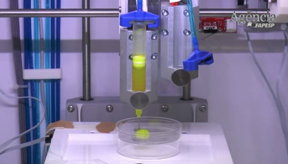
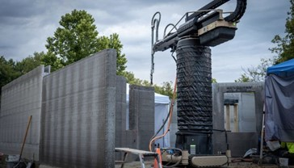
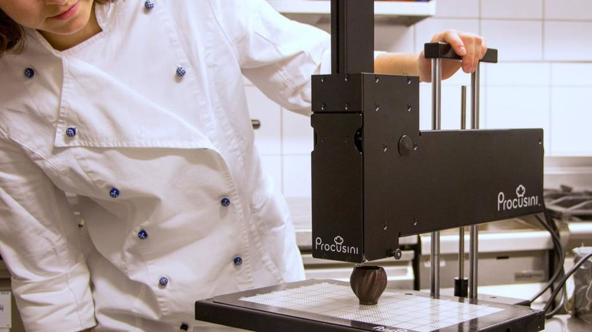

1. C'est quoi l'impression 3D et 4D ?
L'impression 3D
Consiste à créer un objet en ajoutant de la matière couche par couche, à partir d'un modèle numérique. Elle est utilisée pour fabriquer rapidement des pièces, des prototypes ou même des produits finis.
Principales techniques :
- FDM (dépôt de filament fondu) : plastique, usage courant
- SLA (résine photopolymère) : grande précision
- SLS/DMLS (frittage laser) : poudres plastiques ou métalliques
- LMD, Jet Fusion : technologies industrielles avancées
L'impression 4D
Utilise les mêmes principes que l'impression 3D, mais avec des matériaux spéciaux qui réagissent à des changements environnementaux. La 4e dimension, ici, c'est le temps : l'objet imprimé évolue après sa fabrication.
Stimuli déclencheurs :
- Température (se plier avec la chaleur)
- Humidité (se déployer au contact de l'eau)
- Lumière (se contracter à la lumière UV)
- Champs magnétiques
Matériaux utilisés :
- Polymères à mémoire de forme
- Hydrogels intelligents
- Alliages thermosensibles (Nitinol)
2. Quelles sont les tendances en 2025 ?
Pour les impressions 3D :
- Très utilisée dans l'aéronautique, la santé (prothèses), et le bâtiment
- Nouveaux matériaux : métaux très résistants, fibres carbone, plastiques bio-sourcés
- L'intelligence artificielle aide à concevoir des objets plus légers, solides et économes
Pour les impressions 4D :
- Les objets changent de forme selon les conditions (chaleur, eau)
- Matériaux utilisés : polymères à mémoire de forme, gels réactifs
- Utilisée en médecine (implants évolutifs), textile (vêtements intelligents), espace (structures déployables)
3. Quels outils sont utilisés ?
Côté logiciels
On utilise Fusion 360, Cura ou SolidWorks pour créer les modèles 3D. Pour la 4D, des logiciels de simulation comme Abaqus ou ANSYS permettent de prévoir comment les objets vont réagir.
Côté matériel
On retrouve des imprimantes FDM, SLA, SLS, etc. La différence avec la 4D vient surtout des matériaux utilisés.
Carte des fabricants français
Principaux fabricants d'imprimantes 3D en France
4. Qui sont les acteurs importants ?
- Stratasys, HP, 3D Systems : grands noms de l'impression 3D
- Le MIT (Self-Assembly Lab) : pionnier dans l'impression 4D
- Des startups comme Carbon, Formlabs ou Desktop Metal innovent aussi beaucoup
5. Le marché des imprimantes 3D et 4D
a) Les imprimantes 3D
Cette croissance est tirée par des facteurs tels que l'adoption industrielle rapide, les progrès des technologies de fabrication additive et la demande croissante de composants personnalisés et complexes dans divers secteurs, notamment la santé, l'aérospatiale et l'automobile.
Croissance du marché 3D
Évolution 2024-2032
b) Les imprimantes 4D
Les progrès de la technologie de biofabrication stimuleront le marché de l'impression 4D au cours de la période de prévision. La technologie d'impression 4D permet aux objets imprimés de s'auto-transformer au fil du temps lorsqu'ils sont en contact avec des sources d'énergie externes comme la pression, la chaleur, etc.
Croissance du marché 4D
Évolution 2024-2029
6. Aujourd'hui et demain ?
Organes bio-imprimés
Mini foie créé en 90 jours
Maisons imprimées
Construction en quelques jours
Cuisine 3D
Pâtisseries personnalisées
Vêtements intelligents
Adaptation automatique à la météo
L'impression 3D et 4D sont promises à un bel avenir, avec des applications toujours plus concrètes.